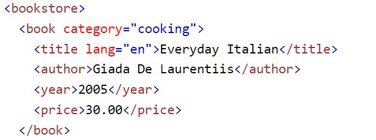

What is xml and js?
What is xml?
- Xml basically stores info it does not actually do anything on its own.
- it basically is a simple way to store and send info and xml doesnt actually store any info on how to be displayed either.
- xml is used a lot within web design as its an easy way to store and send data.
- xml is also resitant to change because of its design its easy to add or change the way the data is used.
- so for instance if you redesigned a website you could still use the same xml file to grab data from you just change the output is viewed.
Example of xml

- Above is an example of xml from W3schools.
- unlike html xml does not have predefined tags.
- The tags are more or less just there to indentify certian fuctions of the data.
- every xml file starts with a root element in this case bookstore.
- and then it desclates into lower elemets like catagory title author etc.
- this makes it easier to make new data as well.
What is javascript?
- firstly javascript and java are 2 different things but they do share some properties they are diffrent though.
- javascript adds complex fuctionalty to web pages.
- javascript is considered a client side programming languge since most of the code runs within your browser.
- its used a lot in webpages but also for ios and andriod development.
- javascript also works with html and css so for instance you can style a button made with javascript with css.
some of those complex tasks include...
- searching a database
- build games
- make a countdowntimer
- rotating through images in a slide show
- buttons
Javascript elements, properties, methods, and functions
- an element is basically the over all base of the javascript file its basically a variable that it pulls info from.
- properties basically the info from those elements for instance in both java and javascript a len properties would tell you how long an element it.
- methods basically take and change an element so for instance there is a method called concatonation that takes two elements and puts them together
so you could put in both a first name and last name and it could turn it into a full name.
- lastly a fuction is a block of reusable code that allows you to preform diffrent actions so for instance you could use a fuction to generate a random number in range
to simulate a dice roll.
Resources